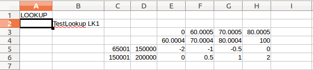
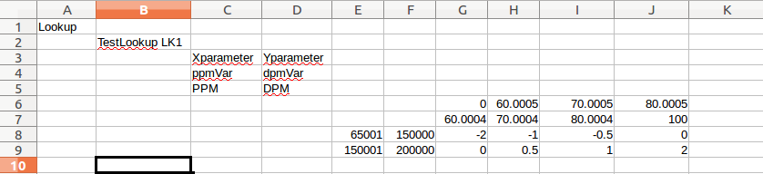

Guideline Compiler User Manual
Summary
GDLC is a guideline compiler. It was created to allow guidelines to be written using text files and a simple language. The compiler parses and compiles the text files (called source files) into an XML version of the guideline. This XML file can be uploaded directly into the application using the normal upload procedure.
Table of Contents
- Running GDLC from the command line
- Compiler Options
- Inclusion Paths
- Configuration Paths
- Documentation Conventions
- GDL Syntax
- Keywords
- Identifiers
- Operators
- Equality Operators
- Boolean Operators
- Mathematical Operators
- Variables
- PPMs
- Definitions
- Examples
- Types
- AppXML Source
- DPMs
- Definitions
- Examples
- Types
- Example
- References
- DSMs
- Definitions
- Examples
- References
- LOS Restrictions
- Lookups
- Definitions
- References
- PowerLookups
- Definitions
- References
- Rules
- Definitions
- References
- Rulesets
- Definitions
- References
- Conditions
- Definitions
- References
- Defining Categories
- Defining PriorTos
- Telling the Compiler about your Properties
- Messages
- Message Types
- DPMs in Messages
- Exception messages
- Findings messages
- Aliases
- Variables
- Rules
- Rulesets
- Guideline Definitions
- Including Source Files
- Importing Files
- Lookup Files
- PowerLookup Files
- XML Functions
- Definitions
- References
- Miscellaneous
- Inserting a Pricing Guideline (special rule)
Running GDLC from the command line
Typing GDLC without any parameters (or with the -h option) will result in the following usage message:
======================================================================
GDLC GuideLine Compiler
Usage: GDLC inFile [outFile] [-switch]* [--I]* [--C]*
[] = optional
* = 0 or more, separated by spaces
inFile name of file to compile.
outFile name of XML output file. (default is guideline name)
--switches--
-h, -help show usage instructions.
-version display the application version.
-no,-nooutput do not generate output.
-r, -raw force output of all rules/sets/lookups.
outFile is a required parameter when -raw is used.
-v, -verbose show all status messages.
-vp, show parse tree.
-validxml output valid xml.
--parameters--
--Ipath path to include dir. Default: current dir
--Cpath path to search for config files.
======================================================================
The -raw option is not available at this time.
Compiler Options
Inclusion Paths
Inclusion Paths are directory paths the compiler will search to find files imported
or included by your source files.
Inclusion paths are set using the --I command line parameter. Multiple
directories can be added to the inclusion path list with repeated use of
the --I flag.
Example:
gdlc my_rules.gdl my_output.xml --Irelative/path/to/my/include/dir --I/another/path
Configuration Paths
Configuration Paths are directory paths the compiler will search to find configuration files.
Configuration paths are set using the --C command line parameter. Multiple
directories can be added to the configuration path list with repeated use of
the --C flag similar to the Inclusion Paths above.
Documentation Conventions
Text surrounded with square brackets [] is optional.
Text formatted like this indicates a keyword.
GDL Syntax
Notes:
- GDL is CaSe sEnSitiVe.
- Definitions mean the objects are being defined
- References mean previously defined objects are being referenced
- Most reference statements must be terminated with
; -
rule,ruleset, andguidelinedefinition statements must be terminated withend. - Comments may be placed into the guideline source code in one of two ways:
-
Single line comments: Any text from
//to the end of a line is considered a comment -
Multi line comments: All text within a
/* ... */pair is considered a comment.
-
Single line comments: Any text from
Keywords
alias app boolean condition continue
crd date decision dpm dsm
else end false guideline if
import IN include InsertPricingGuideline lookup
message money numeric OUT percentage
PL powerlookup ppm prd rule
ruleset text then true xmlfunc
Identifiers
Variable, rule, ruleset and condition identifiers (names) are limited to the
string lengths listed below. Spaces and special characters (such as &, *, and @)
are not allowed as part of the identifier. The only special characters that
are allowed (other than alphanumeric characters) are _ (the underscore) and
- (the dash). Identifiers must start with a letter.
DPM/DSM variable names/aliases are limited to a maximum character length of 50.
Operators
These operators are available for use in the guidelines.
Equality Operators
Equality operators can only be used inside of if statements.
< <= >
>= == !=
<> in ??
Boolean Operators
Boolean operators can only be used inside of if statements.
&& and || or ( )
Mathematical Operators
Mathematical operators can only be used on the right hand side of assignment (=) statements.
+ - * / ^ ( )
Variables
All variable definition statements must be terminated with a ;.
PPMs
PPM variables are primary parameter variables. They are considered read only by the application. The application initializes PPM variables with values from the engine based on their XPath definition.
Definitions
ppm valueType ppmType identifier ["alias"];
Examples
ppm text prd pProgramName "Program Name";
ppm text app pUserType "User Type";
ppm money crd pMortgagePayoffs "Mortgage Payoffs";
Types
valueType:
The type of data the PPM will return:
booleandatemoneynumericpercentagetext
AppXML Source
ppmType:
What section of the AppXML is the PPM sourced from:
-
app: application -
prd: product -
crd: credit
DPMs
DPM variables are derived parameter variables. These variables are considered read/write by the application (the value that they contain can be modified by guideline rules).
Definitions
dpm valueType identifier ["alias"];
Examples
dpm numeric creditGradeScore;
dpm text docTypeAbbrev;
dpm money loanAmount "Loan Amount";
Types
The type of data the variable will contain:
booleandatemoneynumericpercentagetextdatetime
To specify the visible precision of a numeric value, surround the desired
precision with parens immediately after the numeric keyword.
Note that this doesn't affect the actual precision of the variable's value when used in calculations (16 places), only how it is displayed to the user.
Example
dpm numeric(2) loanAmount "Loan Amount";
References
DSMs
DSM variables are Decision Parameters, a special subset of DPM variables. They
are indicated by the decision keyword that begins the variable definition.
Refer to the DPM variable description for further restrictions/applications.
Definitions
decision dpm valueType identifier ["alias"];
Examples
decision dpm numeric testDsm "Test DSM Alias";
References
LOS Restrictions
LOS Guideline Engine Restriction
The guidelines must initialize a DPM/DSM variable to a value before it is referenced in any way (other than an assignment), or an application level error will be thrown.
This restriction does not apply to the AMS Guideline Engine.
Lookups
Definitions
Prior to 3.0:
lookup("Lookup Name", xParameterVariable, yParameterVariable);
3.0 +
lookup("Lookup Name");
The Xparameter and Yparameter details are now included as part of the Lookup
data. Previously, the parameters were defined in the lookup declaration
statement (above).
References
This statement defines a lookup and returns the looked-up value. It can be used
on the right hand side of an assignment ( = ) statement.
aValue = lookup("FHA-ClosingCostState");
When a lookup is defined, the compiler searches for the lookup data in memory.
An error will be thrown if the data does not exist. See the import statement
for how to load lookup data.
All lookup definition/reference statements must be terminated with a ;.
PowerLookups
Definitions
PowerLookups are just Rulesets defined within a xls/csv file.
As such, there are no special definition statements for PLKs.
References
Because PowerLookups are simply Rulesets, they are referenced the same way any other ruleset is referenced:
ruleset SomeRuleset();
Prior to referencing a PowerLookup ruleset, the ruleset must be
imported.
Rules
Definitions
Rule definitions consist of an if statement block surrounded with
the rule and end keywords:
rule RuleIdentifier()
// if statement block
end
Note the required parenthises at the end of the rule identifier.
An if block is made up of the keywords if, then, else (optional)
and end to close it.
rule SomeRule()
if( /* conditional statements */ )
then
// assignment statements (if conditionals equate to true)
else
// assignment statements (if conditionals equate to false)
end // end of if block
end // end of rule block
Conditional statements must be surrounded by parenthesis. If multiple
conditional statements are used (combined with or, ||, and, or &&) then
each conditional statement is surrounded, as is the group.
Single conditional example:
rule SingleConditionalRule()
if( a == b )
then
a = c;
end
end
The statement above does not contain the optional else statement. While
the else (if false) block is optional, the true block is not.
Also note that assignments (=) cannot be used in the conditional section of an
if statement, only the boolean operators listed elsewhere.
Multiple conditional example:
rule MultipleConditionalRule()
if(
( a == b ) &&
( b == c )
)
then
a = d;
end
end
This rule could also be written as:
rule MultipleConditionalRule()
if(
( a == b ) and
( b == c )
)
then
a = d;
end
end
Here's a more complicated example:
rule ComplicatedMultipleConditionalRule()
if(
(
( a == b ) and
( b == c )
) or
(
( a != b ) and
( b != c )
)
)
then
a = d;
end
end
For readability purposes, if you use and, and or in your statements,
do not combine them with && and ||. The compiler won't complain; it is
acceptable syntax, but can be confusing to the reader.
Here's that rule again using the alternative operators:
rule ComplicatedMultipleConditionalRule()
if(
(
( a == b ) &&
( b == c )
) ||
(
( a != b ) &&
( b != c )
)
)
then
a = d;
end
end
The end result is the same.
A more realistic example of a simple rule:
rule SetAppraisedValue()
if(pReviewValue != 0)
then
appraisedValue = pReviewValue;
else
appraisedValue = purchasePrice;
end
end
References
When referencing a rule, either in a ruleset or a guideline, where the rule has already been defined, use this syntax:
rule SetAppraisalValue();
Rulesets
Definitions
TODO: Missing info about 'PL' modifier keyword.
ruleset InitAppraisedValue(continue)
rule SetAppraisedValue()
if(pLoanAmount == pLoanAmount)
then
appraisedValue = pAppraisalValue;
end
end
// ------------------------
rule SetBPOValue()
if(pReviewValue != 0)
then
BPOValue = pReviewValue;
end
end
end // ruleset
Both rule references, and rule definitions can be used within a ruleset.
References
Conditions
condition identifier("SystemName", CategoryType, PriorToType, "Image Doc Type", "Visibility", "Condition message");
SystemName: Name of the condition when displayed in the GUI conditions interface.
CategoryType: Category of condition. By default, the following are available:
- asset
- income
- property
- purchase
- title
PriorToType: Stage where condition should be cleared 'prior to'. By default, the following are available:
- docs
- funding
- approval
Image Doc Type: Name of the 'type' of document the condition is expecting.
Visibility: Visibility of the condition.
- ""
= default visibility - Internal = Internally visible - Not visible from the Borrower Portal
- External = Externally visible - Can be seen in the Borrower Portal
Condition message: Actual text of the condition/stipulation.
Condition definition statements must be terminated with a ;.
Condition reference statements must be terminated with ();.
Condition message definitions contain a number of required parameters used by the system to generate 'underwriter' conditions. If a condition message is redefined only the last definition will be used (uploaded) regardless of where the definition occurred within the guideline.
A warning message will be generated by the compiler so you know this has happened.
Condition message references can only be used within the 'if-true' or 'if-false' sections of rule definitions.
Definitions
condition DeathCertificate("Death Certificate", Legal, Qualification, "Death Certificate", "External",
"Death Certificate");
References
condition DeathCertificate();
Defining Categories
To define your own categories, create a file named category.properties.
Populate it with key/value pairs.
Disability-Co:3
HardshipPackage-Co:2
Property:4
Property-Other:6
Borrower:7
Financials:8
Authorizations:9
Financials-Co:10
Retirement:11
HardshipPackage:12
Maintenance:13
Legal:14
Disability:15
Other:16
Each key/value pair must be separated with : or =. White space does not
matter, with the understanding that trailing white space at the end of the
line is discarded.
Another example (these are all valid):
Property :4
Property-Other: 6
Borrower = 7
Financials=8
Note:
The value part of the key/value pair is a DB ID. To determine which IDs to
use, the Factory Defaults document should be referenced.
Defining PriorTos
To define your own Prior To types, create a file named priorto.properties.
Populate it with key/value pairs.
Processing:8
Submission:9
Qualification:10
TrialPeriod:11
LoanModification:12
The same requirements/restrictions from above (Categories) apply to PriorTos.
Note:
The value part of the key/value pair is a DB ID. To determine which IDs to
use, the Factory Defaults document should be referenced.
Telling the Compiler about your Properties
Use the --C flag to tell the compiler what directory to search for
your properties files.
--Cpath/to/my/properties/dir
Messages
message (messageType, "Message text to display.");
Message Types
Exception type messages are used to indicate a failure of some sort. Exception messages are displayed on the decision results. Message types other than exceptions are used to convey information to the user. The following types are available:
messageType:
exceptionfindingsobservationcredit
Message text: Actual text of the message that will be displayed.
DPMs in Messages
DPM variable values can be incorporated into the message text by surrounding
the variable name with <DPM> </DPM> tags.
When using DPM variables within messages, if the DPM/DSM has an alias
defined, the alias must be used; the engine only recognizes/knows about the
alias.
TODO: IS THIS STILL TRUE (ABOUT ALIASES)?
TODO: DISCUSS THE ABILITY TO UNDERSTAND ALIAS' WHEN PULLING FROM PLKS.
Message definition statements must be terminated with a ;.
Message definitions can only be used within the 'if-true' or 'if-false' sections of rule definitions.
Exception messages
message(exception, "LTV of <DPM>LTV</DPM> is greater than 70%.");
Exception messages are only displayed in the application in the case of a
decline, or decision failure (Decision != "Pass").
Findings messages
message(findings, "The borrower has a payoff on their credit report.");
Findings messages (including all non-exception messages) are only displayed
in the applicaation when there's no decision failure (Decision == "Pass").
Aliases
Aliases were designed so the developer could write GDL code using valid identifier names even though the application is expecting an identifier that contains spaces. This is especially important for PPMs (because they cannot be renamed in the system). Aliases are also used with DSMs for the same reasons.
For example, application expects a DSM named Price Adj-Total. With an alias,
this is no problem. The rules can reference a dpm named priceAdj-total
(notice there are no spaces) and the uploaded XML will reference the dpm
as Price Adj-Total.
Aliases can be used with variables, rulesets and rule identifiers. Please note that the alias itself must be in quotes in all cases, regardless of whether or not it contains spaces.
All alias statements must be terminated with a ;.
Variables
Variable aliases are created during variable definition. The alias is the part of the definition in quotes.
// A DPM
dpm text someHumanName "Some Human Name Alias";
// A DSM
decision dpm numeric(3) modRate "Mod Rate";
// A PPM
ppm crd pCreditScore "Credit Score";
Rules
alias ( rule, Identifier, "Alias name" );
A rule alias statement consists of the alias keyword, an alias type of rule,
the rule identifier and the rule alias.
alias(rule, SimpleAliasRule1, "Alias Rule 1");
Rulesets
alias ( ruleset, Identifier, "Alias name" );
A ruleset alias statement consists of the alias keyword, an alias type of
ruleset, the ruleset identifier and the ruleset alias. Because a
powerlookup is just a ruleset, they can be aliased as well. In fact, this
is how they are generated when PLK .csv files are imported.
alias(ruleset, SimpleAliasRuleset1, "Alias Ruleset 1");
Guideline Definitions
guideline("Guideline Name")
...
end
The guideline statement defines the rules, rulesets, powerlookups and lookups that are within a guideline object. The order of all contained statements will be preserved.
A guideline is the main vehicle for outputting XML. When the compiler is run in its default mode (no output file specified), the guideline name will be used as the filename of the output file. An extension of .XML will be added as a suffix.
The guideline statement must have a matching end statement to terminate
the guideline definition.
Including Source Files
include("includeFileName.gdl");
Included files are parsed and compiled at the point that they are included within the parent file. Including a file more than once will only result in the file being parsed one time. It will be ignored if included again.
The include statement must be terminated with a ;.
Files to be included must reside in a directory that has been added to the inclusion path list. Filenames can also include a relative path from a directory on the inclusion path list:
Given the following directory structure:
/proj
|-my_rules.gdl
|
|-src
| |-inc
| | |-includeFileName
and the following compiler command line is run from /proj:
gdlc my_rules.gdl my_output.xml --Isrc
then the following statements would work:
include("inc/includeFileName.gdl");
include("src/inc/includeFileName.gdl");
but this would not:
include("includeFileName.gdl");
To make this statement work, you could add its directory to the inclusion path list like so:
gdlc my_rules.gdl my_output.xml --Isrc --Isrc/inc
Note that the current directory is added to the inclusion list by default so the following would also work:
gdlc my_rules.gdl my_output.xml
with
include("src/inc/includeFileName.gdl");
Importing Files
import( importType, "csvFileToImport.csv" );
importType:
lookuppowerlookup
The import statement is used to load lookup and powerlookup data into the
compiler. Lookup data must be imported before a lookup definition statement
referencing the data is instantiated. The compiler will throw an error if
the lookup is referenced prior to import.
The import statement can only load CSV files. Non CSV files should not be
referenced by the import statement. The CSV file extension must be included
as part of the filename.
The import statement must be terminated with a ;.
Imported files must also be on the inclusion path.
Lookup Files
import( lookup, "TestLookups.csv");
The lookup import type will import Lookup matricies from a CSV file.
Prior to 3.0
The expected format of a lookup table is:

3.0 +
The expected format is now:

The Xparameter and Yparameter details are now included as part of the Lookup
data. Previously, the parameters were defined in the lookup declaration
statement.
PowerLookup Files
import( powerlookup, "TestPowerLookups.csv");
The powerlookup import type will import PowerLookups from a CSV file. After
a powerlookup has been imported, its ruleset can be referenced the same as
any other ruleset.
Powerlookups are automatically aliased as they are imported: Spaces are removed, dashes and underscores are left in place.
Given a PLK named Test My_Power-Lookup PLK in the file TestPowerLookups.csv,
its use would be as follows:
import(powerlookup, "TestPowerLookups.csv");
// ...
guideline("MyGuideline")
ruleset SomeRuleset();
// ...
ruleset TestMy_Power-LookupPLK();
// ...
end // guideline MyGuideline
XML Functions
xmlfunc identifier( [IN|OUT] dpmVariable, [IN|OUT] "constant", [IN|OUT] 15.5 );
XML Functions are defined and provided by the engine. The compiler does not know whether or not a function is available. It is up to the user to verify the function exists before using it in your guideline.
To use an XML function, it must first be defined. The compiler does check the argument count against the function definition when it is referenced within a rule. Errors will be thrown if the argument count doesn't match.
In both definitions and references, the IN and OUT keywords can be used in
front of each argument. These keywords are optional. They affect nothing and
are only used as an indicator for the user as to whether the variable is used
for INput to the function or OUTput from the function. IN and OUT can be
used in either definitions, or references, or both.
DPM variables, PPM variables, numbers and constants (values surrounded with quotes) can be used as arguments. Inline expressions are not allowed as arguments to the function. Assigning values to variables before using them within a function can be done within the same rule.
Function definition statements must be terminated with a ;.
Function reference statements must also be terminated with ; (the same as
any other assignment operation).
Definitions
Argument types are not checked by the compiler. Because of this, it is usually helpful to use constants in the argument list of the definition that describe what the argument should be.
xmlfunc Floor( IN "NumToBeFloored", IN "Multiple" );
References
XML function references are used on the right hand side of assignment
operations. The xmlfunc keyword is not used in references.
rule SetAppraisedValue()
if(pReviewValue != 0)
then
appraisedValue = Floor( IN pReviewValue, IN 100 );
else
appraisedValue = purchasePrice;
end
end
Miscellaneous
Inserting a Pricing Guideline (special rule)
This keyword is only of use with LOS guidelines. It generates a special rule that tells the application where to insert the pricing guideline (into the eligibility/program guideline) for the current product.
InsertPricingGuideline();
Example
...
rule SomeRule();
ruleset MyRuleset();
InsertPricingGuideline(); // <--- The pricing/product guideline will be inserted here.
ruleset AnotherRuleset();
...